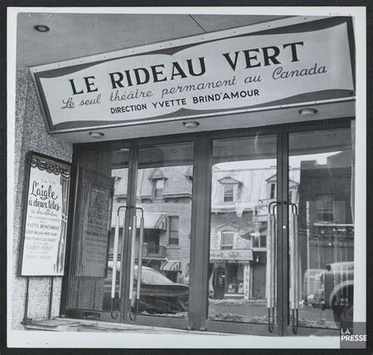
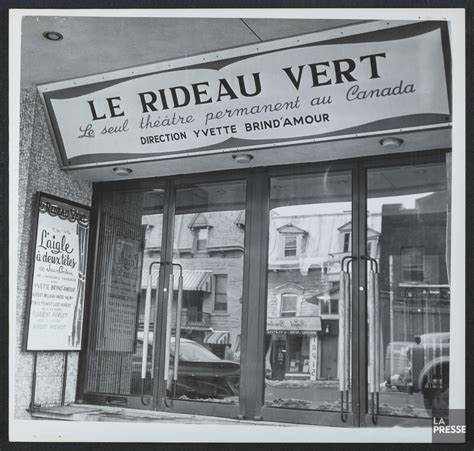

Bienvenue sur le site du voyage pédagogique au Canada !
Ce voyage aura lieu au Canada dans la ville de Montréal du 23 juin 2025 au 28 juin 2025, à la fin de l'année scolaire. Il s'adresse aux vingt étudiants de la promotion des FA en 3ème année de BUT informatique qui seront accompagnés par M. BARREAU et Mme HOGUIN. L'objectif principal de ce voyage est d'étudier le mode d'enseignement de l'informatique en Amérique du Nord, afin de comparer les méthodes pédagogiques et les pratiques académiques avec celles en vigueur en France. Mais ce n'est pas tout ! Les étudiants auront également l'opportunité de découvrir Montréal, ses quartiers vibrants, sa culture unique, et ses attractions emblématiques. Ce voyage sera ainsi une occasion idéale de combiner apprentissage académique et immersion dans la vie locale, pour une expérience enrichissante à la fois sur le plan professionnel et personnel.
Voici le programme détaillé de cette aventure !
Jour 1
Arrivée à Montréal
- Arrivée à l'aéroport
- Installation à l'auberge de jeunesse
- Rencontre avec l'équipe
Jour 2
Découverte de Montréal
- Visite du Vieux-Montréal
- Découverte du Quartier des Spectacles
- Dîner au Vieux-Port
Jour 3
Exploration de l'Université
- Visite de l'Université de Montréal
- Rencontre avec les enseignants et les étudiants
- Observation des méthodes pédagogiques
Jour 4
Exploration des parcs naturels
- Exploration du Biodôme
- Promenade au Parc du Mont-Royal
- Dîner au Plateau Mont-Royal
Jour 5
Découvertes culturelles et scientifiques
- Visite du Centre des Sciences de Montréal
- Visite du Musée d'Art Contemporain de Montréal
- Sortie au théâtre du Rideau Vert
Jour 6
Départ et récapitulatif
- Sortie au Parc d'attractions La Ronde
- Préparation des bagages
- Départ pour l'aéroport
Plongez dans les détails de ce séjour à Montréal !
Jour 1 : Arrivée à Montréal
Lors de ce premier jour, les étudiants arriveront à l'aéroport international de Montréal, où ils atterriront après leur vol. Ensuite, ils se dirigeront vers L'Auberge du Plateau, situé dans le quartier du Plateau Mont-Royal, connu pour ses bâtiments colorés, ses cafés branchés et son atmosphère bohème. Enfin, ils pourront échanger avec les accompagnateurs présents, pour discuter des détails du programme et des étapes à venir.

Jour 2 : Découverte de Montréal
Lors de cette journée, les étudiants auront l'occasion de découvrir certains des sites les plus emblématiques de Montréal. Ils commenceront par une visite du Vieux-Montréal, un quartier historique qui regorge de charme et d'architecture ancienne. Ensuite, ils exploreront le Quartier des Spectacles, un lieu dynamique où se mêlent culture et événements artistiques. Enfin, la journée se terminera par un dîner au Vieux-Port, un endroit idéal pour savourer des spécialités locales tout en profitant d'une vue magnifique sur le fleuve Saint-Laurent

Jour 3 : Exploration de l'Université
Au cours de cette journée, les étudiants auront la chance d'être conviés par le Campus MIL (Montreal Institute for Learning), un centre de recherche et d'innovation de l'Université de Montréal. Ce campus, récemment inauguré, se distingue par son engagement envers l'excellence en enseignement et en recherche en informatique et dans des domaines connexes. Ils auront l'opportunité de rencontrer des enseignants et des étudiants pour découvrir les approches pédagogiques innovantes mises en place au sein de la formation en informatique, une formation de pointe offerte au Canada, axée sur l'apprentissage pratique et collaboratif.
Jour 4 : Exploration des parcs naturels
Les étudiants auront l'opportunité d'explorer le Biodôme de Montréal, un lieu unique où la nature prend vie à travers des répliques de quatre écosystèmes différents. Ensuite, ils partiront pour une promenade au Parc du Mont-Royal, l'un des plus beaux espaces verts de la ville, offrant une vue panoramique imprenable sur Montréal. La journée se terminera par un délicieux dîner au restaurant La Banquise situé au Plateau du Mont-Royal, où les étudiants pourront savourer une exceptionnelle poutine, plat traditionnel du Québec dans un cadre convivial.
Jour 5 : Découvertes culturelles et scientifiques
Les étudiants commenceront par découvrir le Centre des Sciences de Montréal, un musée interactif où des expositions fascinantes stimulent la curiosité scientifique. Ensuite, ils exploreront le Musée d'Art Contemporain de Montréal, un lieu phare pour les amateurs d'art moderne, qui présente une riche collection d'œuvres contemporaines. Enfin, dans la soirée, ils auront l'occasion d'assister à une pièce de théâtre au Théâtre du Rideau Vert.
 

Jour 6 : Départ et récapitulatif
Pour clore ce voyage, les étudiants auront l'opportunité d'aller au parc d'attractions La Ronde, situé à Montréal, avant d'effectuer un récapitulatif avec les enseignants afin de faire un bilan des acquis pédagogiques de ce voyage.